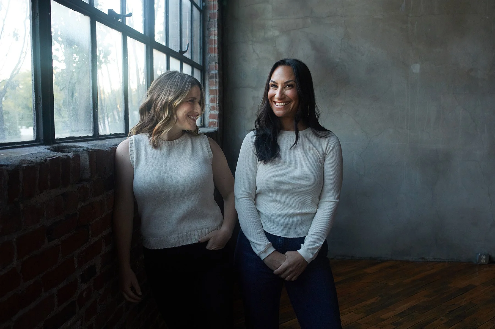
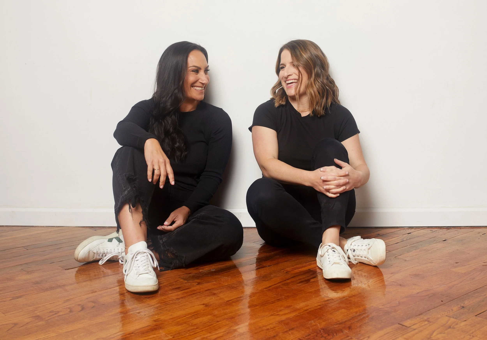

Motion
Movement should feel calm and intentional — like the brand itself. Confident without urgency. Considered, not flashy.
Calm under pressure. Hold steady, then move with intent.
Our brand moves the way we coach: nothing rushed, nothing showy. Things arrive in order, settle into place and stay still long enough to read. Each move is short and eases out; the holds do the work.
Come Together. The letters start a little further apart than they sit in the logo, fade in and ease together: “Work Better” first, then “Together” after a short pause. Then the finished wordmark holds. Use it to open or close a video, and as the end card on every piece of motion.
Animation description
Come Together: after a short lead, every letter starts 35% further from its line’s centre than it sits in the finished mark and fades in over 0.6s while it eases into place over 1.1s (soft ease-out, cubic-bezier(.16,1,.3,1)), the centre letters a beat before the outer ones. “Work Better” comes together first; “Together” follows 0.55s later. The finished wordmark holds for 2.4s, then the letters drift slightly apart and fade out. The held frame is the official wordmark file, unchanged.
Monogram: the same move. The letters close in and fade up while the ring settles from slightly larger to its true size. Use it for short stings and avatars.
End cards come in 16:9, 9:16 and 1:1, on Clear White and Steady Blue: 9:16 Clear White · 9:16 Steady Blue · 1:1 Clear White · 16:9 Steady Blue · Monogram sting.
Our post templates, animated. The collage gathers, then the words rise in line by line and hold long enough to read. Built at 1080×1350 for Instagram and LinkedIn.
Every move has a name, so you can ask for it: “Collage Gather, then Line Rise, then the Come Together end card.”
| Move | What happens | Timing | Use |
|---|---|---|---|
| Come Together | The letters start a little further apart, fade in and ease together into the finished logo; on the wordmark, “Work Better” first, then “Together”. | 1.1s a line (0.6s fade), lines 0.55s apart; hold 2.4s | Logo opens and end cards, wordmark and monogram |
| Collage Gather | The three collage layers arrive in order: the spot blooms, the scribble settles, the illustration settles on top. | 0.48s each, 0.16s apart | Any post or slide with a collage |
| Line Rise | Each line of type rises into place inside its own line. Nothing moves while it’s being read. | 0.42s a line, 0.12s apart; hold ≥ 3s | Headlines, quotes, stats |
| In-frame Drift | A photo drifts a few pixels inside its frame on scroll. | Scroll-linked, speed 0.08–0.14 | Website photos (see below) |
| Ink Draw | A hand-drawn underline or circle draws in along its own path, once. | Once, on first view | Key phrases on the website |
Two signature scroll-driven treatments from the website. Both are subtle, and both honor reduced motion (below).
| Pattern | What it does | Spec |
|---|---|---|
| In-frame parallax | A prominent photo drifts a few pixels within its own frame on scroll — alive without page-jump, and never enough to reveal an edge. | Fixed-ratio frame, overflow:hidden; the <img> at 108–110% with object-fit:cover, a slight negative inset, and max-width:none (a global img{max-width:100%} reset otherwise silently cancels the oversize and reintroduces edge gaps); data-parallax 0.08–0.14. Desktop-only ≥ 820px — bio-page collages are the deliberate exception. |
| Hand-drawn annotations | Sketch-style ink in Intentional Blue drawn in on scroll — a wobbly underline, or an open circle around a key phrase. | Underline = single stroke (1 iteration); circle = double stroke (2 iterations) — don’t match them. Underlines may wrap across lines; circles stay on one line. Marks animate once on first appearance, then persist — never re-animate on scroll or on mobile address-bar resize. A fixed seed keeps the wobble stable across reloads. |
Scroll the page to see both in motion. Same math as the site (js/site.js): a mid-page element translates by ((viewportCenter − elementCenter) × speed), clamped to ±170px. Disabled under prefers-reduced-motion.
Decorative parallax collage — spot & scribble drift past the photo (from the About page)


In-frame parallax — the photo drifts within its own frame, never revealing an edge

Confirm, don’t perform.
Motion exists to confirm a change happened — not to entertain. If the user can’t tell what changed, the animation has failed. If the animation is the point, it’s too much.
Calm under pressure.
Quick on hovers (~120ms), considered on transitions (~200ms), deliberate on overlays (~320ms). Never rushed. Never showy.
Listen before moving.
Always honor prefers-reduced-motion. Replace movement with a state change, not nothing — the user still needs to see the result.
Earn the gesture.
Big moves (page transitions, hero reveals) should be rare and meaningful. If everything moves, nothing matters.
Four durations. Pick the smallest one that still reads as intentional.
Hover · micro state
--motion-duration-quick
Hover color shifts, focus rings, small toggles. Should feel imperceptible but confirmed.
Default state change
--motion-duration-standard
Most component transitions. Tab switches, accordion expand, button pressed → released, card hover lift.
Overlay · expressive
--motion-duration-deliberate
Modal entrance, drawer open, toast slide-in. Long enough to feel composed without dragging.
Page · hero
--motion-duration-slow
Page transitions, hero reveals, large illustrative moments. Use sparingly.
Easing carries personality. Standard for nearly everything; entrance for elements appearing; exit for elements leaving; emphasized only when something needs to pull attention.
cubic-bezier(0.2, 0, 0, 1)
cubic-bezier(0, 0, 0.2, 1)
cubic-bezier(0.4, 0, 1, 1)
cubic-bezier(0.2, 0, 0, 1)
Reusable patterns. Compose by combining a duration and an easing.
opacity 0 → 1
translateY(12px → 0) + opacity 0 → 1
translateX(−24px → 0) + opacity
scale(0.96 → 1) + opacity
scale(1 → 1.4) + opacity 1 → 0
background-position scroll · linear
Hover is the most-frequent motion in the system. Keep it small.
| Surface | Behavior | Tokens |
|---|---|---|
| Button — primary | Background shifts darker (Intentional Blue → Steady Blue) | --btn-primary-bg → --btn-primary-bg-hover |
| Button — secondary | Background fills with ink, label inverts to cream | --btn-secondary-bg-hover |
| Card — default | Background lifts to --surface-muted | --card-bg-hover |
| Card — themed (index) | Inverts to Grounded Black on Clear White | Used on Brand Guide Index |
| Link / nav | 12% Clear White overlay (on dark) · color shift to brand ink (on light) | --state-hover-overlay-on-dark |
| Tag (interactive) | Border color shifts to --ink-default; background unchanged | — |
All hover transitions use --motion-hover (120ms standard easing).
Every component MUST honor prefers-reduced-motion: reduce. The state still has to change — just without the animation.
/* Always wrap motion in a media query */ @media (prefers-reduced-motion: no-preference) { .modal { animation: scale-in var(--motion-overlay-in); } } @media (prefers-reduced-motion: reduce) { .modal { animation: fade-in 0ms; /* state still flips */ } *, *::before, *::after { animation-duration: 0.01ms !important; transition-duration: 0.01ms !important; } }